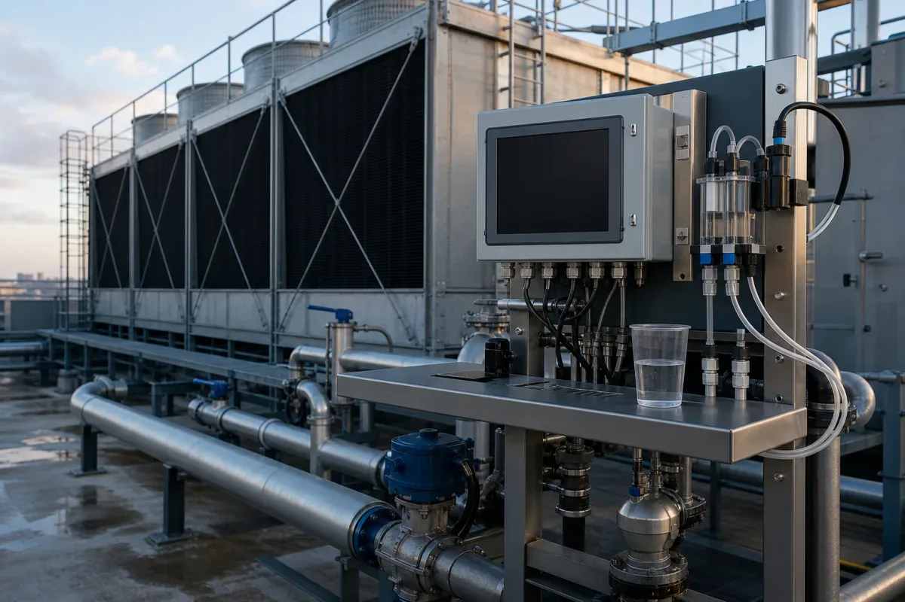
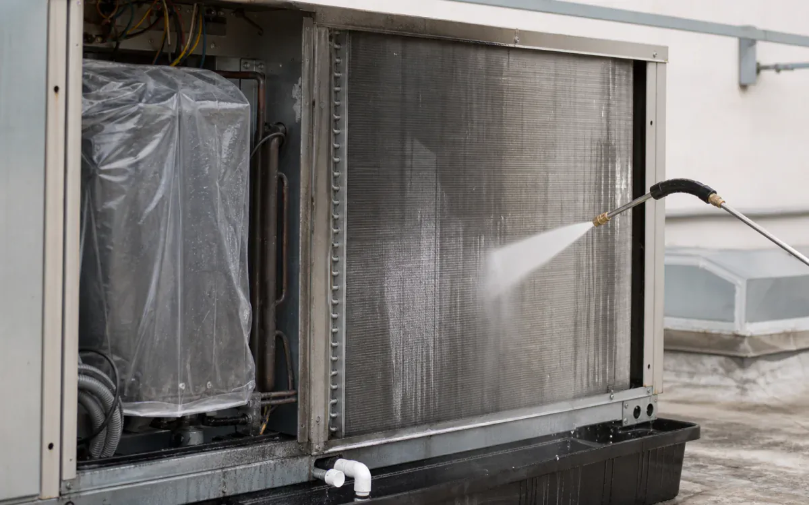
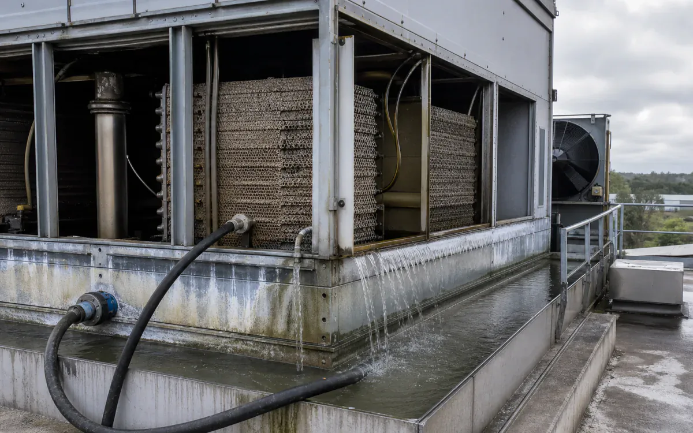
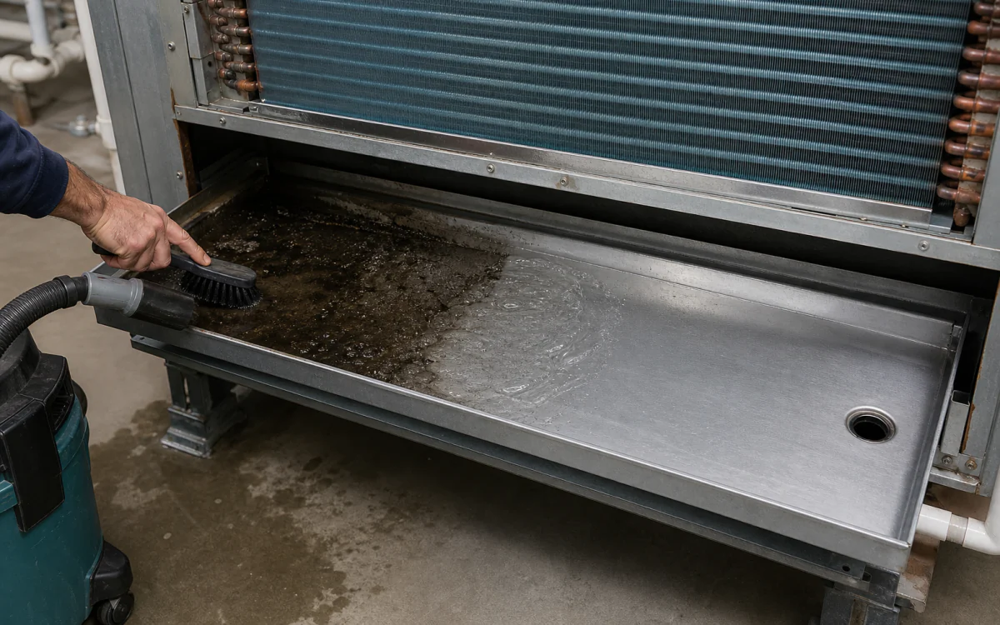
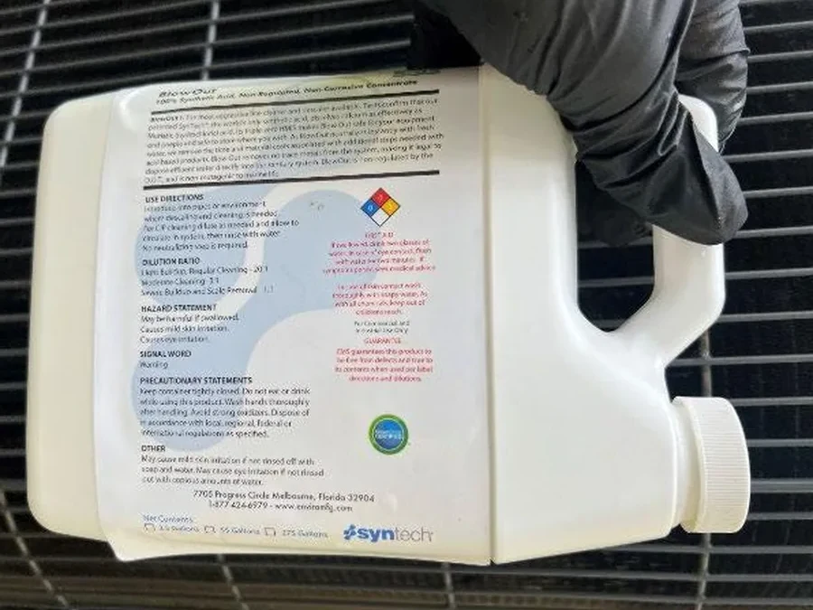
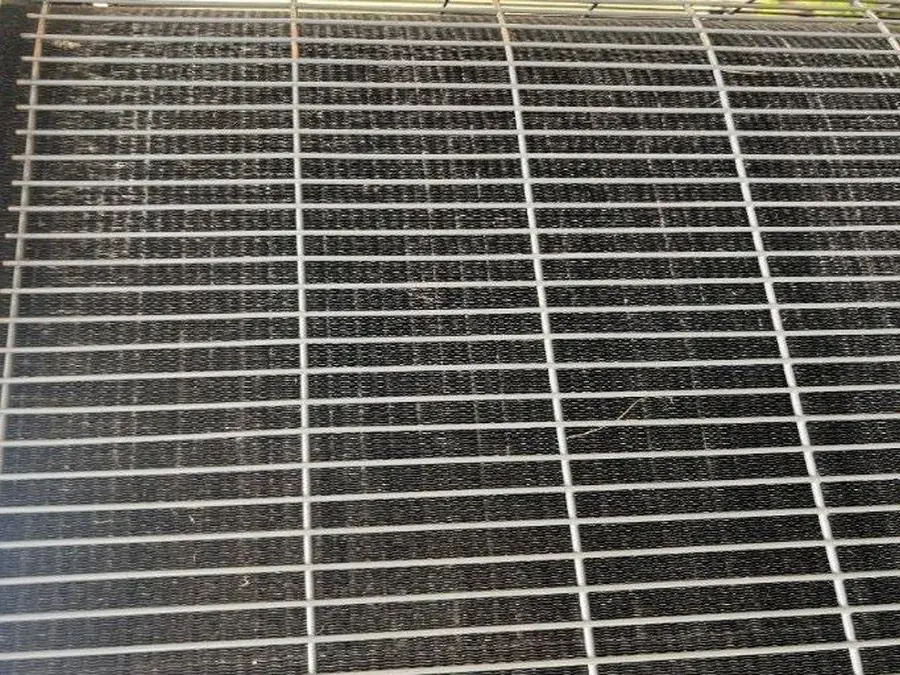
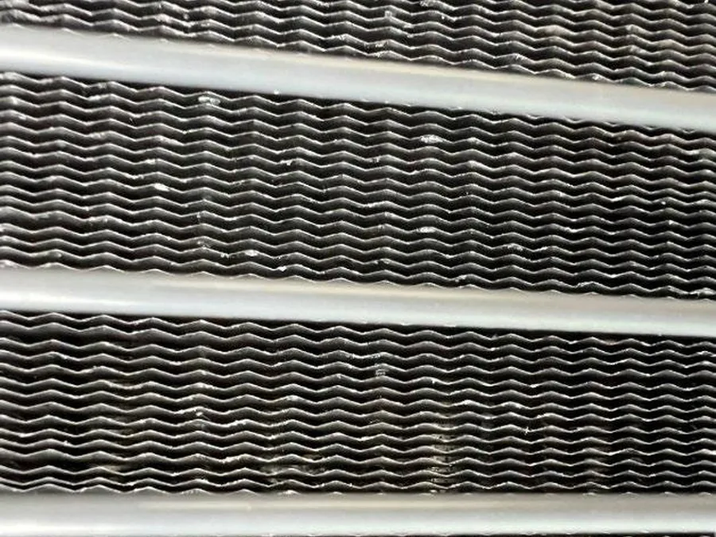
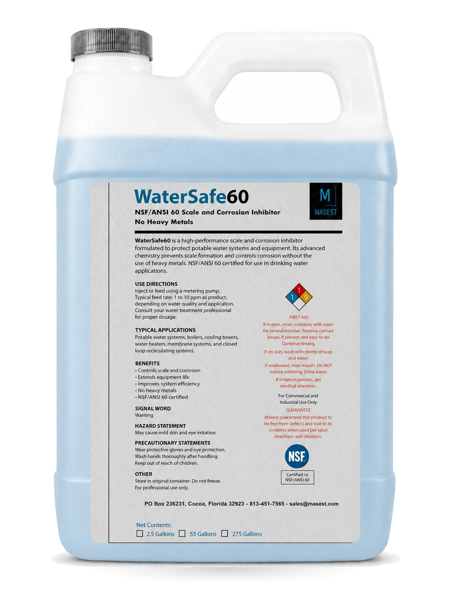
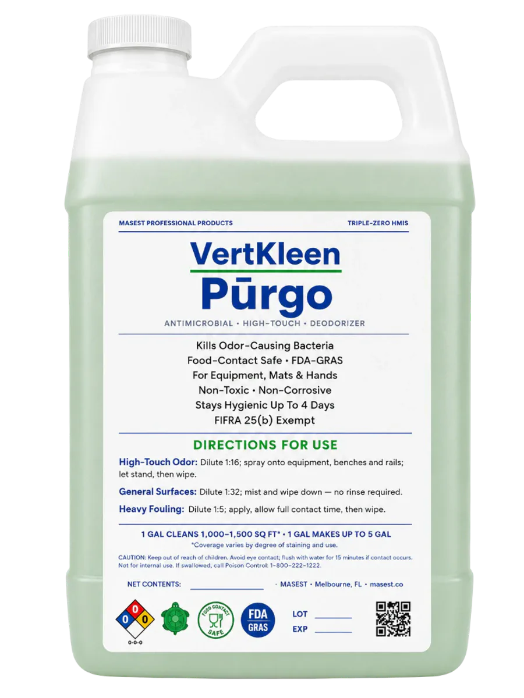
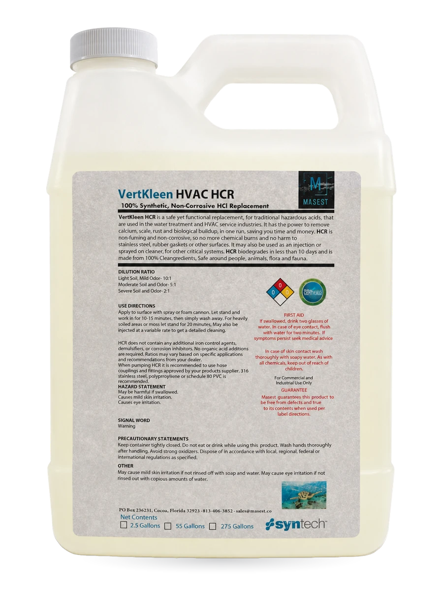

Coils, pans, and drains
Match grease and organic soils to HVAC CR; review HVAC HCR for compatible mineral deposits.
Surface-cleaning steps →Match HVAC CR to compatible organic soils, HVAC HCR or Descaler to mineral deposits, and WaterSafe60 to site-specific scale and corrosion control.

Match grease and organic soils to HVAC CR; review HVAC HCR for compatible mineral deposits.
Surface-cleaning steps →Review HVAC HCR or Descaler for exchangers and water-side loops. Confirm materials, volume, circulation, and rinse acceptance first.
Recirculation and descaling steps →Build WaterSafe60 feed and monitoring around actual water chemistry and a site-specific treatment plan.
Treatment setup steps →Use these planning steps with the current supplied label, SDS, equipment instructions, and approved site method. Confirm concentration, temperature, contact time, and acceptance limits before chemical work.
Product starting points: VertKleen HVAC CR · VertKleen HVAC HCR
Read the supplied label and SDS. Confirm coil metal, coatings, seals, and the equipment maker's cleaning limits. Isolate power and protect controls; arrange rinse-water capture.
Photograph the buildup and check drainage. Test the selected product on a small inconspicuous area at the approved dilution; inspect for discoloration, coating loss, and seal changes.
Use the current label's dilution and mixing order. Record product, water-to-product ratio, batch volume, and planned contact time. Surface-cleaning ratios are not recirculation doses.
Apply by the equipment-approved method. Keep cleaner away from energized parts. Observe the label contact time, keep the surface from drying, and use only tools that will not damage fins or coatings.
Rinse by the approved method, capture runoff, and inspect fins, pan, drain, and seals. Check that the drain flows and no cleaner residue remains before restoring equipment.
Stop for leaks, discoloration, coating damage, blocked drainage, or unexpected reaction. Do not mix cleaners or use cleaning instructions as a disinfectant procedure.
Save before/after photos, dilution, contact time, rinse method, drain check, and any equipment defects.
Scope this method with MASESTProduct starting points: VertKleen HVAC HCR · VertKleen Descaler
Have a qualified technician approve the method. Confirm metallurgy, gaskets, coatings, isolated volume, pump/hose compatibility, venting, working pressure, concentration, temperature, contact time, monitoring intervals, rinse limits, and waste route before starting.
Record flow, pressure drop, inlet/return temperatures, and visible scale. Shut down under the site's energy-control procedure, verify isolation, release stored pressure, cool as required, and protect adjacent operating equipment.
Connect the cleaning reservoir to a compatible pump, the isolated asset, and a contained return. Use the approved vent arrangement; do not seal a circuit that can evolve gas. Test with water for leaks, flow, return capacity, and isolation from the live system.
Measure the actual cleaning volume, including reservoir and hoses. Prepare the specified product concentration using its label mixing order. Do not extrapolate surface dilution or add a second chemical to the circuit.
Run at the approved flow, temperature, and pressure. Log elapsed time, supply/return pH, flow, pressure drop, temperature, and visible reaction at the method's intervals. Filter or remove dislodged solids as specified. Replenish only within the approved method; pH alone does not prove cleaning is complete.
Stop at the approved endpoint or time limit. Collect spent solution for the site's wastewater assessment. Flush with approved water until the specified pH, conductivity, and residue limits are met; inspect strainers and check flow/pressure drop.
Restore valves, probes, strainers, and guards; leak-test and return the system under the equipment maker's restart procedure. Re-establish the approved treatment program. Verify operating readings and obtain the owner's acceptance.
Stop circulation for a leak, loss of flow, blocked return, excessive pressure/temperature, uncontrolled gas or foam, or signs of material attack. Never run a cleanout through an occupied or live potable-water circuit.
Keep the circuit sketch, isolated volume, product/batch, concentration, readings, waste disposition, rinse acceptance, restored operating data, and owner sign-off.
Scope this method with MASESTProduct starting points: VertKleen HVAC HCR · VertKleen Descaler · VertKleen HVAC CR
Coordinate the outage with the owner and water-management team. Follow the tower maker's instructions and site water-management plan for shutdown, aerosol control, cleaning, disinfection, and restart.
Isolate electrical and mechanical energy under the site procedure. Establish containment and the approved waste route. Follow site controls for fans, nearby air intakes, and exposure during cleaning.
Drain as specified and remove sludge and debris from the basin, strainers, and accessible surfaces. Inspect fill, drift eliminators, distribution nozzles, coatings, and corrosion before choosing a cleaner.
Use the compatible product and approved method for grease, organic soils, or mineral deposits. Apply surface directions to surfaces; use the isolated recirculation method only where the equipment and method permit it.
Capture cleaning waste and verify the rinse endpoint. Complete the separate disinfection procedure specified by the water-management plan using the appropriate registered product and its label; a descaler is not a substitute.
Inspect and restore equipment, refill with approved water, restart the approved treatment/feed controls, and check leaks and operating readings. Record control measurements and owner approval before routine operation.
If contamination or a Legionella concern is suspected, involve the water-management team and follow its response plan before proceeding. Do not improvise chemical mixtures or disinfection doses.
Log shutdown, inspection findings, cleaning product/method, separate disinfection record, waste route, refill chemistry, controller checks, and restart approval.
Scope this method with MASESTProduct starting points: WaterSafe60
Identify the system and use: open cooling tower, closed loop, process water, or potable application. Confirm applicable product listing, maximum use level, system restrictions, and current label with the treatment specialist.
Measure makeup and system water chemistry, including the specialist's required hardness, alkalinity, conductivity, pH, temperature, and corrosion indicators. Confirm system volume, makeup demand, blowdown, materials, and existing chemicals.
Have the treatment specialist select the dose, target residual, control limits, sampling points, and response actions from the current product documentation and site water analysis. Do not use a descaling concentration as a continuous feed setting.
Use compatible metering equipment and containment. Verify pump calibration and controller/probe readings, set the approved feed/interlocks, and confirm the actual treatment response with the specified test or titration method.
Trend the required residual and water parameters at the site's intervals. Inspect for scale, corrosion, fouling, and leaks. Correct out-of-limit results under the approved plan; record water changes, feed adjustments, and service work.
Coordinate scale/corrosion treatment with the site's separate microbiological controls, cleaning schedule, stagnation controls, and shutdown/restart procedures. Review results and responsibilities with the owner.
Escalate unknown water chemistry, loss of feed, unexplained pH change, corrosion, or a water-management control failure. WaterSafe60, HVAC CR, and HVAC HCR do not replace a Legionella water-management program.
Keep water analyses, selected dose and control limits, calibration/test records, trend logs, corrective actions, service visits, and the current site plan.
Scope this method with MASESTFurther guidance: CDC cooling-tower controls · CDC water-management programs · OSHA hazardous-energy control.
Put VertKleen beside the cleaner you use today. Compare the finished result, time, water, and repeat work before making a wider switch.
| Surface or material | First check |
|---|---|
| Copper, carbon steel, and stainless steel | Test a small, hidden area first and make sure the finish looks right. |
| Aluminum, galvanized steel, tower polymers, and elastomers | Test a small, hidden area first and make sure the finish looks right. |
| Treatment sensors | Test a small, hidden area first and make sure the finish looks right. |
Clean Cooling towers, fill, plate and shell heat exchangers, condensers, boilers, closed loops, coils, strainers, and piping. Target Calcium carbonate, iron oxide, mixed mineral scale, silt, corrosion product, and organic fouling. Take a before photo and note how long the job usually takes.
Start with a small, easy-to-compare area and make sure the finish looks right.
Use the same crew, tools, area size, and working time for VertKleen and the cleaner you use today.
Compare the finished surface, crew time, product, water, passes, downtime, and repeat work.






Match the product to the buildup, materials, and approved method. Review application guidance and current documents before selecting it.

Control pH and mineral buildup with NSF/ANSI/CAN 60 certified water-treatment chemistry.

Clean hard surfaces and control odor-causing bacteria in facilities, gyms, locker rooms, and fleet interiors.

Remove calcium, scale, and rust from HVAC equipment with a non-fuming hydrochloric-acid replacement.

Clear grease and organic buildup from HVAC drains, pans, and facility equipment with a concentrated 60% caustic soda replacement.

Clear calcium, lime, and mineral scale from coils, pumps, and heat exchangers with a non-fuming muriatic-acid replacement.
Four service levels cover different visit and support needs. Product selection and dose depend on the water analysis, system, and approved treatment plan.
Request current service levels and a site-specific quote.
Final scope, price, equipment ownership, renewal, response coverage, and exclusions are confirmed in your proposal.
Scope my water-treatment programChoose testing, field review, or water-management services to define chemistry and acceptance criteria.
Testing & Technical Services →Plan temporary circulation equipment, method documentation, rinse acceptance, commissioning, and owner handoff.
Contractor workflow →Coordinate pilot, approved work instructions, pack sizes, replenishment, and training across crews and sites.
Chemical Programs →